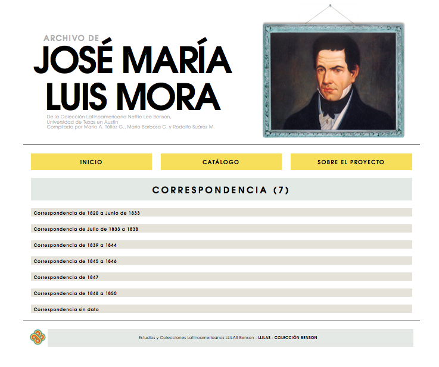
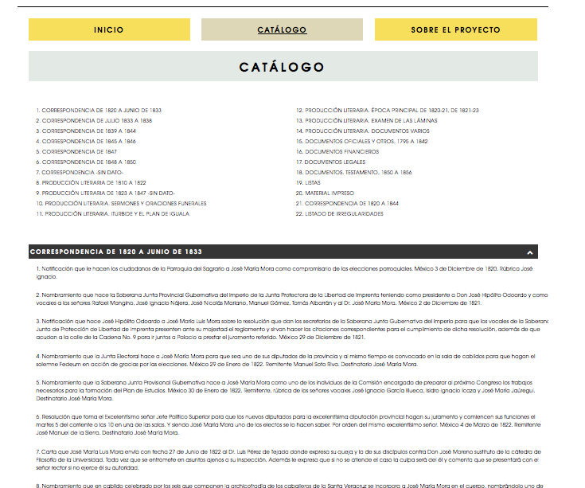
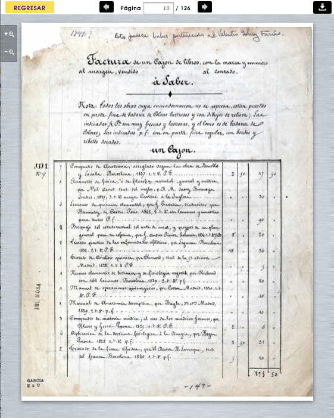

For the Latin American Studies Department at the Univeristy of Texas, I designed and developed this digital archive for the Jose Maria Luis Mora collection. The digital portal gives greater access to the archive's holdings and increases the findability of its documents. Following the tenets of archival practice, the architecture of the digital archive mimics the structure of the physical collection and therefore maintains archival integrity. Items can be located by browsing or using the search function. Users can also zoom in to examine documents and download items in PDF form.
 Pictured above, is the catalog view of the archive's holdings. The catalog lists each folder title in chronlogical view. This gives researchers a way to find documents without necessarily knowing what series they belong to and to see detailed descriptions of each item in the archive.
Below the document viewer which allows users to flip through the documents in their archival order. Users can zoom in/out and save PDFs of the document.
